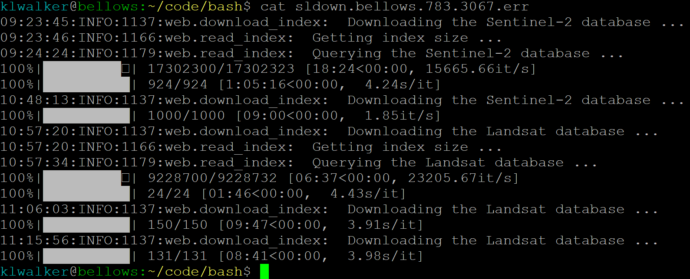

Downloading process¶
===============================================================================================================================
Jordan Graesser’s eosvault script drives the download process, see here for more information on the script process.
To run the script:
1. Get gridcells to download¶
Find a block of cells in need of processing in the cell_blocks.txt file in jad-cel/sandbox-cel/paraguay_lc (anything without an X next to it is free)
cd ~/../
cd jad-cel/sandbox-cel/paragual_lc
vim cell_blocks.txt
#"check out" a block of cells by putting an X and your initials next to it. Note your range(s) somewhere.
#save the file:
:wq
[Enter]
2. Edit the download_eri.sh document for targeted grid cells and sensor product¶
cd ~/code/bash/
vim download_eri.sh
To edit a line, type i, edit as desired, then hit Esc key and type :wq. Hit Enter key
Go here for more info on editing in vim
This is the default script (with line numbering added for reference below):
1- #!/bin/bash -l
2-
3- #SBATCH -N 1 # number of nodes
4- #SBATCH -n 4 # number of cores
5- #SBATCH -t 0-04:00 # time (D-HH:MM)
6- #SBATCH -p basic
7- #SBATCH -o sldown.%N.%a.%j.out # STDOUT
8- #SBATCH -e sldown.%N.%a.%j.err # STDERR
9- #SBATCH --job-name="dwn-pry"
10- #SBATCH --array=1
11-
12- ##############################################
13- START_DATE="2010-03-01"
14- END_DATE="2020-11-01"
15-
16- # yes | no
17- IGNORE_INCOMPLETE="no"
18-
19- # yes | no
20- RESET_ASSET="no"
21-
22- ##############################################
23-
24- BATCH_SIZE=100000
25-
26- # As an array job
27- GRID_ID=$SLURM_ARRAY_TASK_ID
28-
29- PROJECT_HOME="/jad-cel/sandbox/sandbox-cel/paraguay_lc"
30- OUT_DIR="${PROJECT_HOME}/raster/grids"
31-
32- MY_USERNAME=""
33-
34- GRID_FILE="${PROJECT_HOME}/vector/pry_grids.gpkg"
35- CONFIG_FILE="/home/${MY_USERNAME}/project/config/config_eri.yaml"
36- CRS_PROJ4="+proj=aea +lat_1=-5 +lat_2=-42 +lat_0=-32 +lon_0=-60 +x_0=0 +y_0=0 +ellps=aust_SA +units=m +no_defs "
37-
38- #############################################
39- # Turn off NumPy parallelism and rely on dask
40- #############################################
41- export CLOUDSDK_PYTHON=python3
42- export OPENBLAS_NUM_THREADS=1
43- export MKL_NUM_THREADS=1
44- # This should be sufficient for OpenBlas and MKL
45- export OMP_NUM_THREADS=1
46- ################################################
47-
48- # activate the virtual environment
49- source ~/.nasaenv/bin/activate
50-
51- SAT_SENSORS=("S2" "S2cp" "LT05" "LE07" "LC08")
52-
53- # Iterate over each sensor
54- for SAT_SENSOR in "${SAT_SENSORS[@]}"
55- do
56-
57- if [ "$SAT_SENSOR" == "S2" ]; then
58- SATELLITE="sentinel-2"
59- ASSET_ID="COPERNICUS/S2"
60- elif [ "$SAT_SENSOR" == "S2cp" ]; then
61- SATELLITE="sentinel-2"
62- ASSET_ID="COPERNICUS/S2_CLOUD_PROBABILITY"
63- else
64- SATELLITE="landsat"
65- ASSET_ID="LANDSAT/${SAT_SENSOR}/C01/T1_SR"
66- fi
67-
68- if [ "$IGNORE_INCOMPLETE" == "yes" ]; then
69-
70- eosvault download --out-dir $OUT_DIR --grid-file $GRID_FILE --grid $GRID_ID --start-date $START_DATE --end-date
71- $END_DATE --config-file $CONFIG_FILE --batch-size $BATCH_SIZE --max-workers $SLURM_CPUS_ON_NODE --satellite $SATELLITE
72- --asset-id $ASSET_ID --grid-crs "${CRS_PROJ4}" --ignore-incomplete #--reset-asset #--clear-all #--reset-db
73-
74- else
75-
76- if [ "$RESET_ASSET" == "yes" ]; then
77-
78- eosvault download --out-dir $OUT_DIR --grid-file $GRID_FILE --grid $GRID_ID --start-date $START_DATE --end-date
79- $END_DATE --config-file $CONFIG_FILE --batch-size $BATCH_SIZE --max-workers $SLURM_CPUS_ON_NODE --satellite $SATELLITE
80- --asset-id $ASSET_ID --grid-crs "${CRS_PROJ4}" --reset-asset #--clear-all #--reset-db
81-
82- else
83-
84- eosvault download --out-dir $OUT_DIR --grid-file $GRID_FILE --grid $GRID_ID --start-date $START_DATE --end-date
85- $END_DATE --config-file $CONFIG_FILE --batch-size $BATCH_SIZE --max-workers $SLURM_CPUS_ON_NODE --satellite $SATELLITE
86- --asset-id $ASSET_ID --grid-crs "${CRS_PROJ4}" #--clear-all #--reset-db
87-
88- fi
89-
90- fi
91-
92- done
93-
94- deactivate
Most lines should stay as they are.
the lines that you need to change are:
MyUsername (line 32 here): Insert your username between the quotes if it isn’t already present.
Grid info:
#SBATCH --array=(line 10 here). This is where you enter the gridcells you are processing.
You can enter a range (e.g. 898-908), But be mindful that you are not hogging all the computer bandwidth.
You can limit the number of cells that are processed at one time by adding %n
For example, 898-908%4 would process 4 cells at a time. When the first 4 finish, the next will start.
Warning
Google Earth Engine caps downloading loads, so downloads will fail if too many are processed at once. With Sentinel (which are heavy files), %2 is safest. With Landsat %4 is fine.
Incomplete tag: Check that
IGNORE_INCOMPLETE=(line 17 here) is set to “No” for the first run. (You will change this in
step 5 if all images don’t download properly the first time.)
After making these edits, save your script and exit:
#(If in insert mode), use [Esc] to exit insert mode
:wq
For further information on the rest of the script (parts you will NOT likely edit):
Lines 1-10
These are all configuration flags for SLURM.
#SBATCH tells SLURM these are not user comments
(line 3): We aren’t doing any distributed computing across nodes, so we will always use -N 1.
(line 4): -n 8 are the number of CPUs for concurrent or parallel processing (controlled in the Python scripts).
(line 5): -t is the estimated max runtime
(line 6): -p tells SLURM this job should be sent to the standard partition (there are also ‘short’, ‘gpu’, and ‘largemem’ >available).
(line 7&8): -o and -e are output log files
(line 9): -job-name is the name of the batch job
(line 10): array is the list of gridcells for processing (1,2,3,etc or 1-3) *Lines 13-14
User variables for start and end dates to stream. (For this project, the dates are from 1-Mar-2010 to 1-Nov-2020)
Lines 16-17
if yes, flag as incomplete if all images did not download correctly. If no, consider complete even if some images are >missing
Lines 19-20: flag to reset databased to allow redownload if previously downloaded fully but want to redo
Line 24
Do not modify
Lines 26-27
Names process/files based on grid cell number
Lines 29-30
File paths for:
(lines 34) output files (leave as is)
(line 35) input configuration file. Make sure to fill in [username] in line 32.
Lines 48-66
Do not modify.
Lines 68-94
These are the actual command lines to run the process based on the settings above.
3. Run the process¶
#if not already in bash directory, navigate there:
cd ~/code/bash/
#submit the command:
sbatch download_eri.sh
Note
Current run-time estimates for single grid cells:
Sentinel 2: 40min - 1hr
Sentinel 2 cloudmasks: 20min
Landsat 8: 30-40min
Landsat 7: 20-30min
Landsat 5: 5-10min
To check on job:
cat sldown.bellows.909.78.err (with 909 = grid running and 78 = job number)
To check your position in line:
squeue -u [username]
to see if there are a lot of jobs before you:
squeue
4. Check downloading status:¶
Often some images do not download properly the first time. All images for a grid cell need to be downloaded (or exempted) for the remaining processing steps to work.
To check whether all images processed for a specific gridcell and task:
cat sldown.bellows.909.78.err (with 909 = grid running and 78 = job numb
# or, if multiple gridcells run:
ls ~/code/bash/
# then for each .err file found:
cat [filename]
If all images downloaded, you should see: 
You can also generate a figure to see which cells downloaded fully:
#Activate virtual environment:
source .nasaenv/bin/activate
#Run status command:
eosvault status --config-file ~/project/config/config_eri.yaml --out-dir ~/code/bash --grid-file jad-cel/cel-sandbox/paraguay_lc/vector/pry_grids.gpkg --zoom
#Deactivate virtual environment:
deactivate
To view the Download Progress figure: Download file to view on local computer:
rsync -raz --progress <username>@ssh.eri.ucsb.edu:<ERI path> <local path>
Alternatively, you can view the file though an FPT such as WinSCP.
The figure will look something like this:
 The key indicates which cells loaded completely for each product. Those not listed need to be redownloaded. (Turquoise (y) means all are good)
The key indicates which cells loaded completely for each product. Those not listed need to be redownloaded. (Turquoise (y) means all are good)
5. Rerun cells that did not load completely¶
For cells that did not load completely, check the .err and .out files:
#i.e for grid cell 909, if 78 is job number for an incomplete process:
cat sldown.bellows.909.78.err
cat sldown.bellows.909.78.out
If the .out file does not indicate any big problems and the slider at the bottom of the .err file is near 100% with only a few files missing in the fraction next to it (e.g. 124/127), you probably do not need to worry about larger issues. These cells do need to be rerun, however, to register correctly in the database for further processing.
Repeat steps 2 and 3 above. In adition to editing the grid cells to correspond to those that you are rerunning, in the download_eri.sh file, you will also change the following line:
yes | no
IGNORE_INCOMPLETE="no"
#to
yes | no
IGNORE_INCOMPLETE="yes"
By setting “Ignore Incomplete” to “yes”, the database will populate correctly even if all of the images do not download. If they do not load the second time, they probably aren’t going to, so you can move on as long as only a few images are missing. Check the .err and .out files to make sure there are no major errors, though.
Attention
Remember to reset “IGNORE_INCOMPLETE=”no” before beginning new downloads
To rerun only a specific sensor¶
Use the script: download_eri_single.sh
The script is copied below with line numbers added for reference.
Edit the array in line 10 to contain the grid cells you want to download.
Change IGNORE_INCOMPLETE in line 35 to “yes”
Enter your username in line 43 if it isn’t already present.
Select the sensor product by uncommenting the corresponding lines (remove the # at the beginning of the line) and commenting those that don’t correspond (replacing the # at the beginning of the line). (Only one product can be run at a time).
For Sentinel: uncomment
SATELLITE="sentinel-2(line 25 here) and
ASSET_ID="COPERNICUS/S2"(line 26 here) for images orASSET_ID="COPERNICUS/S2_CLOUD_PROBABILITY"(line 27 here) for cloud masksFor Landsat: uncomment
LANDSAT_SENSOR="LC08"ASSET_ID="LANDSAT/${LANDSAT_SENSOR}/C01/T1_SR"andSATELLITE="landsat"(lines 25-27 here). Also change the Landsat sensor (line 30 here) to correspond to the sensor you want to process: “LT05” for Landsat 5, “LE07” for Landsat 7, or “LC08” for Landsat 8 (as noted in line 24).
#Download_eri_single.sh script, copied from jad-cel/sandbox-cel/paraguay_lc/templates/eosvault_download_eri_pry_single.sh
1- #!/bin/bash -l
2-
3- #SBATCH -N 1 # number of nodes
4- #SBATCH -n 2 # number of cores
5- #SBATCH -t 0-04:00 # time (D-HH:MM)
6- #SBATCH -p basic
7- #SBATCH -o sldown.%N.%a.%j.out # STDOUT
8- #SBATCH -e sldown.%N.%a.%j.err # STDERR
9- #SBATCH --job-name="dwn-pry"
10- #SBATCH --array=894
11-
12- sleep $((RANDOM%30+1))
13-
14- # Change permissions on output files
15- # user = 7 = rwx
16- # group = 7 = rwx
17- # others = 4 = r
18- #umask 774
19-
20- #####################################################
21- START_DATE="2010-03-01"
22- END_DATE="2020-11-01"
23-
24- # landsat | sentinel-2
25- #SATELLITE="sentinel-2"
26- #ASSET_ID="COPERNICUS/S2"
27- #ASSET_ID="COPERNICUS/S2_CLOUD_PROBABILITY"
28-
29- # LT05 | LE07 | LC08
30- LANDSAT_SENSOR="LC08"
31- ASSET_ID="LANDSAT/${LANDSAT_SENSOR}/C01/T1_SR"
32- SATELLITE="landsat"
33-
34- # yes | no
35- IGNORE_INCOMPLETE="no"
36-
37- BATCH_SIZE=100000
38- #####################################################
39-
40- # As an array job
41- GRID_ID=$SLURM_ARRAY_TASK_ID
42-
43- MY_USERNAME=""
44- OUT_DIR="/jad-cel/sandbox-cel/paraguay_lc/raster/grids"
45- GRID_FILE="/jad-cel/sandbox-cel/paraguay_lc/vector/pry_grids.gpkg"
46- CONFIG_FILE="/home/${MY_USERNAME}/project/config/config_eri.yaml"
47- CRS_PROJ4="+proj=aea +lat_1=-5 +lat_2=-42 +lat_0=-32 +lon_0=-60 +x_0=0 +y_0=0 +ellps=aust_SA +units=m +no_defs "
48-
49- #############################################
50- # Turn off NumPy parallelism and rely on dask
51- #############################################
52- export CLOUDSDK_PYTHON=python3
53- export OPENBLAS_NUM_THREADS=1
54- export MKL_NUM_THREADS=1
55- # This should be sufficient for OpenBlas and MKL
56- export OMP_NUM_THREADS=1
57- ################################################
58-
59- # activate the virtual environment
60- source ~/.nasaenv/bin/activate
61-
62- if [ "$IGNORE_INCOMPLETE" == "yes" ]; then
63-
64- eosvault download --out-dir $OUT_DIR --grid-file $GRID_FILE --grid $GRID_ID --start-date $START_DATE --end-date $END_DATE 65- --config-file $CONFIG_FILE --batch-size $BATCH_SIZE --max-workers $SLURM_CPUS_ON_NODE --satellite $SATELLITE --asset-id
66- $ASSET_ID --grid-crs "${CRS_PROJ4}" --ignore-incomplete #--reset-asset #--clear-all #--reset-db
67-
68- else
69-
70- eosvault download --out-dir $OUT_DIR --grid-file $GRID_FILE --grid $GRID_ID --start-date $START_DATE --end-date $END_DATE 71- --config-file $CONFIG_FILE --batch-size $BATCH_SIZE --max-workers $SLURM_CPUS_ON_NODE --satellite $SATELLITE --asset-id
72- $ASSET_ID --grid-crs "${CRS_PROJ4}" #--reset-asset #--clear-all #--reset-db
73-
74- fi
75-
76- deactivate
To run the process:
#if not already in bash directory, navigate there:
cd ~/code/bash/
#submit the command:
sbatch download_eri_single.sh
Check .err and .out files as before.
6. Move .err and .out files to new directory to facilitate tracking of new downloads¶
All these files will soon make it difficult to find the new ones to monitor. Move them to an archive directory after checking to clean up the clutter.
#Make the directory (first time only)
mkdir /home/<username>/code/bash/archive/
#Move .err and .out files from /bash to /archive
cd ~/code/bash/
mv /home/<username>/code/bash/*.{err,out} /home/<username>/code/bash/archive/